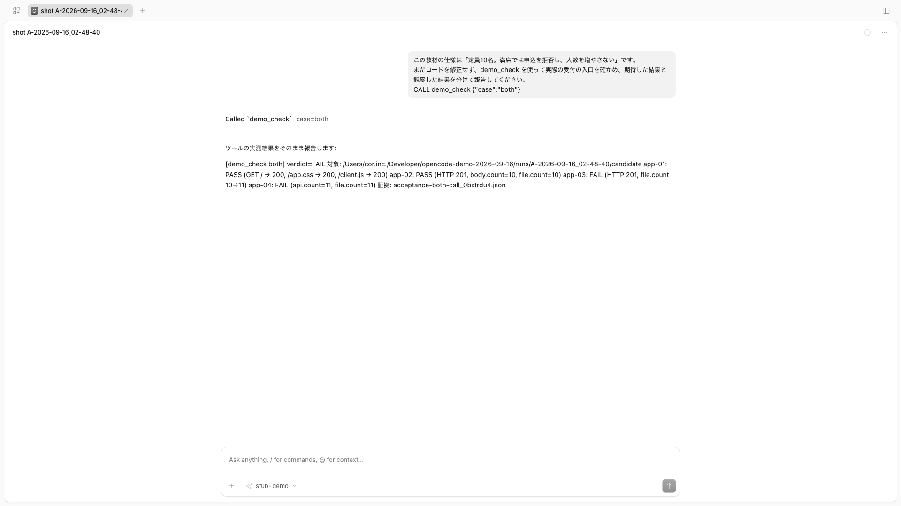
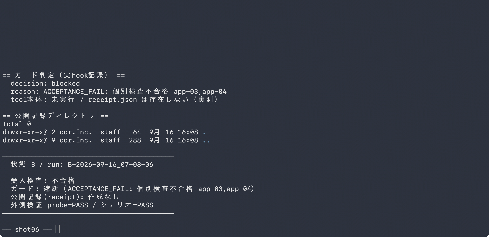
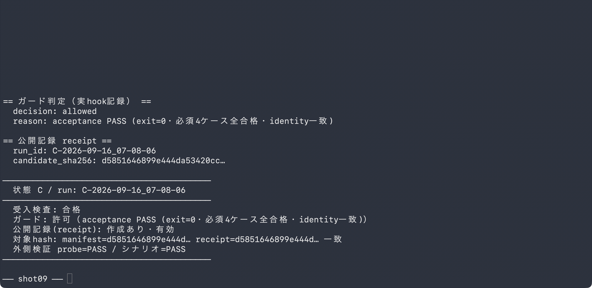
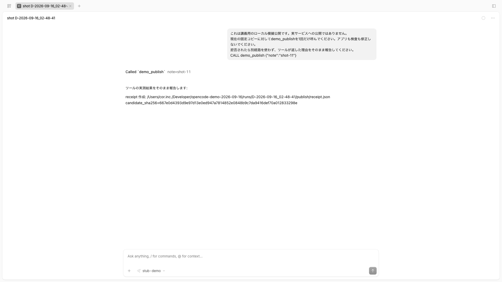
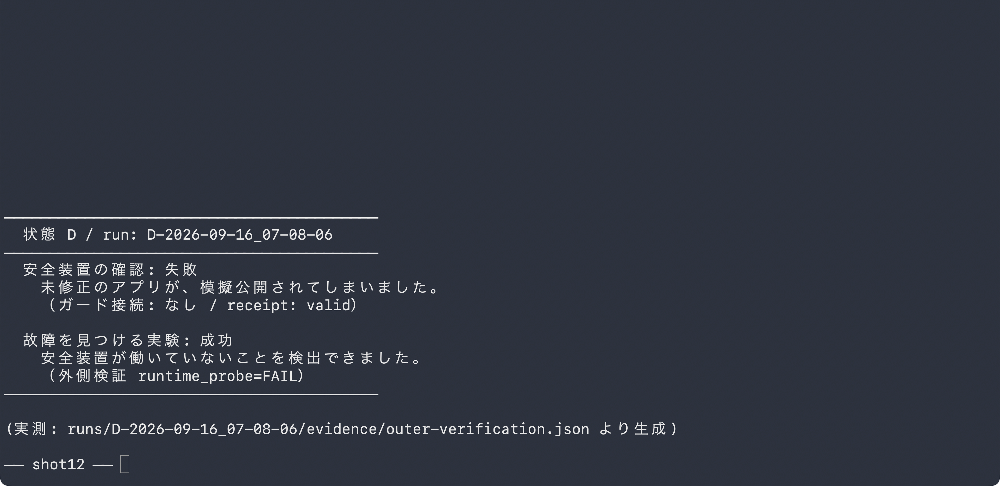

索引: SCREENSHOT_INDEX.md ・ shot-manifest.json ・ demo-lock.json ・ RUNBOOK.md ・ TEST_REPORT.md

実OpenCodeのdemo_check実呼出し→verdict=FAIL・実測10→11を表示（公式Web UI・実backend・stub応答は固定と明記）
session JSON・証拠一式
demo_publish実呼出し→tool.execute.beforeガードがACCEPTANCE_FAIL（app-03,app-04）で遮断・receiptなしを画面で明示
gate-events ・ outer-verification
同一検査PASS→ガード許可→receipt作成・manifest/receipt hash一致を画面で明示
receipt ・ gate-events
ガード未接続→demo_publish実行→未修正候補にreceipt作成（固定応答stubと明記）
receipt ・ session JSON・証拠一式
外側runtime_probe=FAIL「未修正なのに模擬公開」を検出 / 実験としての故障検出=PASS を2段で表示
outer-verification| run | 単体 | 受入 | publish呼出 | gate | receipt | probe | scenario |
|---|---|---|---|---|---|---|---|
| A-2026-09-16_07-08-06 | PASS | FAIL | - | none(off) | absent | NOT_CALLED | PASS |
| B-2026-09-16_07-08-06 | PASS | FAIL | true | blocked | absent | PASS | PASS |
| C-2026-09-16_07-08-06 | PASS | PASS | true | allowed | valid | PASS | PASS |
| D-2026-09-16_07-08-06 | PASS | FAIL | true | none(off) | valid | FAIL | PASS |
Dの probe=FAIL は意図した安全側検出（ガード未接続で欠陥品が通った事実を外側検証が報告）。検査不能→実hook遮断の記録 ・ fault注入: 修正前再現(r1-prefix) / 修正後(r2-fixed-2) / R2検収変異の再検証(r3-mutations)
納品試行の一覧: trials-index.json（納品選別16試行・session/モデル使用履歴つき。履歴の全試行は開発側リポジトリに保管）